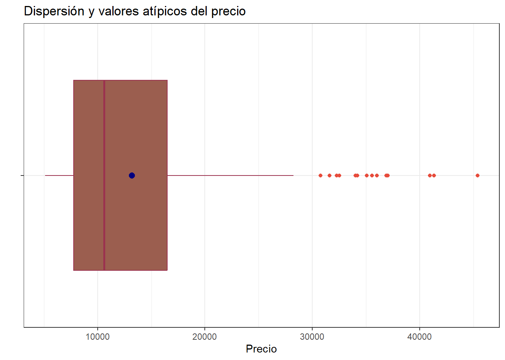
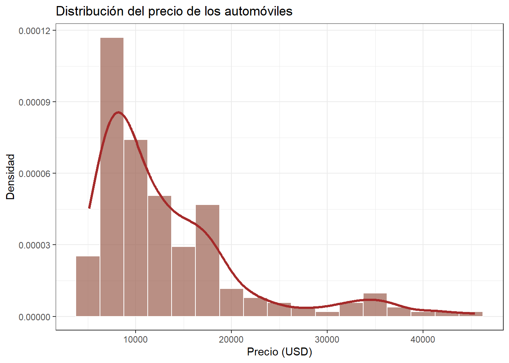
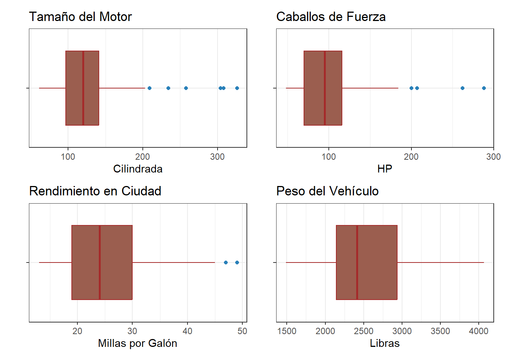
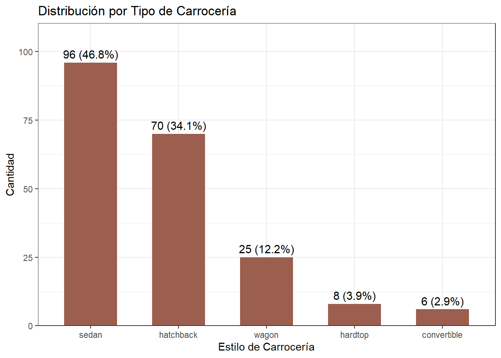
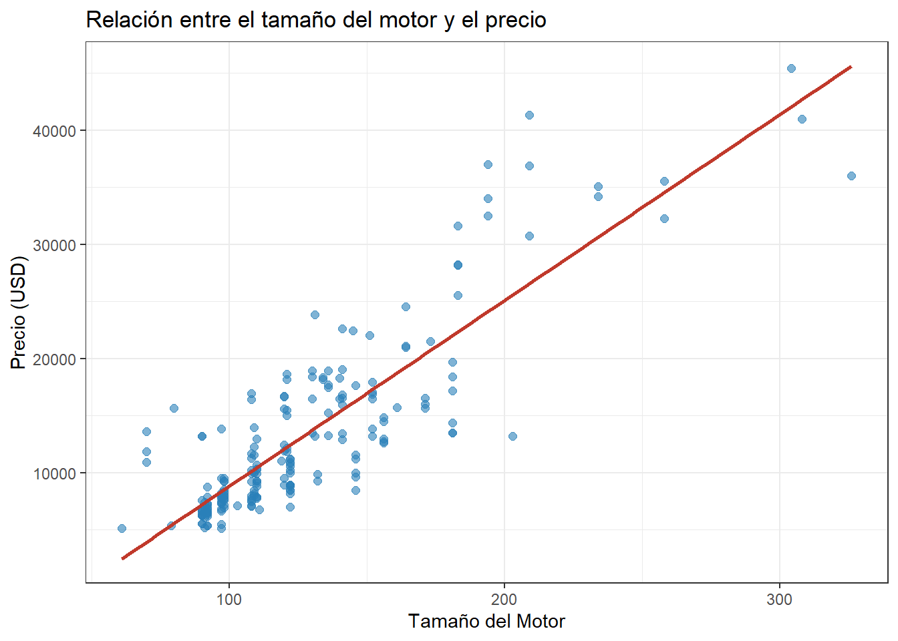
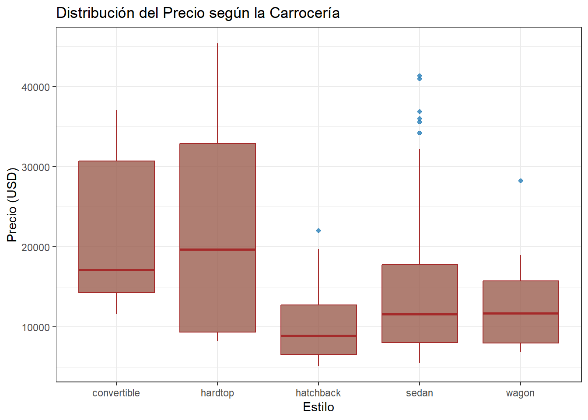
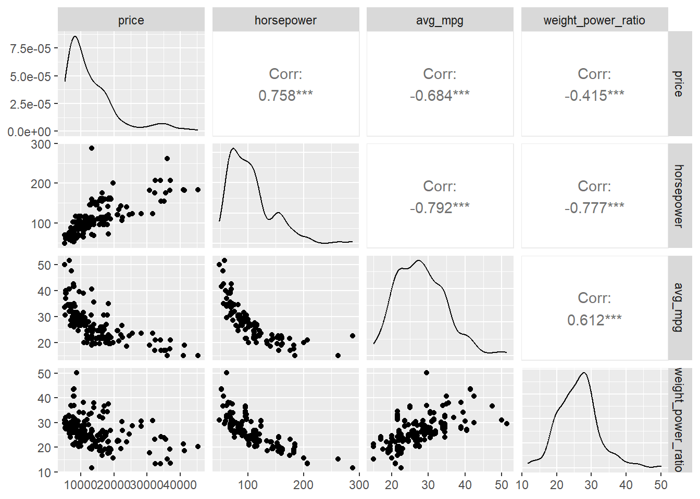

Proyecto final metodos estadisticos
2026-09-17
Chapter 1 Introducción
Para este trabajo vamos a utilizar el conocido conjunto de datos Automobile (obtenido del 1985 Ward’s Automotive Yearbook de la UCI). Este dataset incluye información muy variada sobre diferentes modelos de autos de esa época.
En total, la base de datos cuenta con 205 observaciones (autos) y 25 variables que mezclan datos numéricos y categóricos. La información se divide principalmente en tres aspectos:
Características técnicas y físicas: Detalles del vehículo como las dimensiones, el tipo de motor, los caballos de fuerza (horsepower) y el rendimiento de combustible.
Nivel de riesgo (Symboling): Una puntuación asignada por aseguradoras que va desde +3 (autos considerados más riesgosos o deportivos) hasta -3 (autos muy seguros).
Pérdidas normalizadas: Un indicador que mide el pago promedio de siniestros por año, ajustado según el tamaño y tipo de auto.
Objetivo del Trabajo
El propósito principal de este análisis será limpiar y preparar los datos para construir un modelo predictivo donde nuestra variable objetivo (o variable dependiente) será el precio price. La idea es descubrir qué características técnicas y comerciales influyen más en el valor de mercado de los automóviles.
1.1 Analisis Exploratorio de los datos
Librerias ultilizadas:
library(tidyverse)
library(dtplyr)
library(Amelia)
library(moments)
library(patchwork)
library(GGally)
library(readr)
library(dplyr)
library(moments)
library(ggplot2)
library(knitr)
library(kableExtra)## Rows: 205 Columns: 26
## ── Column specification ────────────────────────────────────────────────────────
## Delimiter: ","
## chr (16): X2, X3, X4, X5, X6, X7, X8, X9, X15, X16, X18, X19, X20, X22, X23,...
## dbl (10): X1, X10, X11, X12, X13, X14, X17, X21, X24, X25
##
## ℹ Use `spec()` to retrieve the full column specification for this data.
## ℹ Specify the column types or set `show_col_types = FALSE` to quiet this message.colnames(Automobile) <- c(
"symboling", "normalized-losses", "make", "fuel-type", "aspiration",
"num-of-doors", "body-style", "drive-wheels", "engine-location",
"wheel-base", "length", "width", "height", "curb-weight",
"engine-type", "num-of-cylinders", "engine-size", "fuel-system",
"bore", "stroke", "compression-ratio", "horsepower", "peak-rpm",
"city-mpg", "highway-mpg", "price"
)Veamos las primeras 5 filas
kable(head(Automobile, n=5), caption="Primeras 5 observaciones de la base de datos Automobile") %>%
scroll_box(width="100%", height = "300px")| symboling | normalized-losses | make | fuel-type | aspiration | num-of-doors | body-style | drive-wheels | engine-location | wheel-base | length | width | height | curb-weight | engine-type | num-of-cylinders | engine-size | fuel-system | bore | stroke | compression-ratio | horsepower | peak-rpm | city-mpg | highway-mpg | price |
|---|---|---|---|---|---|---|---|---|---|---|---|---|---|---|---|---|---|---|---|---|---|---|---|---|---|
| 3 | ? | alfa-romero | gas | std | two | convertible | rwd | front | 88.6 | 168.8 | 64.1 | 48.8 | 2548 | dohc | four | 130 | mpfi | 3.47 | 2.68 | 9 | 111 | 5000 | 21 | 27 | 13495 |
| 3 | ? | alfa-romero | gas | std | two | convertible | rwd | front | 88.6 | 168.8 | 64.1 | 48.8 | 2548 | dohc | four | 130 | mpfi | 3.47 | 2.68 | 9 | 111 | 5000 | 21 | 27 | 16500 |
| 1 | ? | alfa-romero | gas | std | two | hatchback | rwd | front | 94.5 | 171.2 | 65.5 | 52.4 | 2823 | ohcv | six | 152 | mpfi | 2.68 | 3.47 | 9 | 154 | 5000 | 19 | 26 | 16500 |
| 2 | 164 | audi | gas | std | four | sedan | fwd | front | 99.8 | 176.6 | 66.2 | 54.3 | 2337 | ohc | four | 109 | mpfi | 3.19 | 3.40 | 10 | 102 | 5500 | 24 | 30 | 13950 |
| 2 | 164 | audi | gas | std | four | sedan | 4wd | front | 99.4 | 176.6 | 66.4 | 54.3 | 2824 | ohc | five | 136 | mpfi | 3.19 | 3.40 | 8 | 115 | 5500 | 18 | 22 | 17450 |
La estructura de los datos
## spc_tbl_ [205 × 26] (S3: spec_tbl_df/tbl_df/tbl/data.frame)
## $ symboling : num [1:205] 3 3 1 2 2 2 1 1 1 0 ...
## $ normalized-losses: chr [1:205] "?" "?" "?" "164" ...
## $ make : chr [1:205] "alfa-romero" "alfa-romero" "alfa-romero" "audi" ...
## $ fuel-type : chr [1:205] "gas" "gas" "gas" "gas" ...
## $ aspiration : chr [1:205] "std" "std" "std" "std" ...
## $ num-of-doors : chr [1:205] "two" "two" "two" "four" ...
## $ body-style : chr [1:205] "convertible" "convertible" "hatchback" "sedan" ...
## $ drive-wheels : chr [1:205] "rwd" "rwd" "rwd" "fwd" ...
## $ engine-location : chr [1:205] "front" "front" "front" "front" ...
## $ wheel-base : num [1:205] 88.6 88.6 94.5 99.8 99.4 ...
## $ length : num [1:205] 169 169 171 177 177 ...
## $ width : num [1:205] 64.1 64.1 65.5 66.2 66.4 66.3 71.4 71.4 71.4 67.9 ...
## $ height : num [1:205] 48.8 48.8 52.4 54.3 54.3 53.1 55.7 55.7 55.9 52 ...
## $ curb-weight : num [1:205] 2548 2548 2823 2337 2824 ...
## $ engine-type : chr [1:205] "dohc" "dohc" "ohcv" "ohc" ...
## $ num-of-cylinders : chr [1:205] "four" "four" "six" "four" ...
## $ engine-size : num [1:205] 130 130 152 109 136 136 136 136 131 131 ...
## $ fuel-system : chr [1:205] "mpfi" "mpfi" "mpfi" "mpfi" ...
## $ bore : chr [1:205] "3.47" "3.47" "2.68" "3.19" ...
## $ stroke : chr [1:205] "2.68" "2.68" "3.47" "3.40" ...
## $ compression-ratio: num [1:205] 9 9 9 10 8 8.5 8.5 8.5 8.3 7 ...
## $ horsepower : chr [1:205] "111" "111" "154" "102" ...
## $ peak-rpm : chr [1:205] "5000" "5000" "5000" "5500" ...
## $ city-mpg : num [1:205] 21 21 19 24 18 19 19 19 17 16 ...
## $ highway-mpg : num [1:205] 27 27 26 30 22 25 25 25 20 22 ...
## $ price : chr [1:205] "13495" "16500" "16500" "13950" ...
## - attr(*, "spec")=
## .. cols(
## .. X1 = col_double(),
## .. X2 = col_character(),
## .. X3 = col_character(),
## .. X4 = col_character(),
## .. X5 = col_character(),
## .. X6 = col_character(),
## .. X7 = col_character(),
## .. X8 = col_character(),
## .. X9 = col_character(),
## .. X10 = col_double(),
## .. X11 = col_double(),
## .. X12 = col_double(),
## .. X13 = col_double(),
## .. X14 = col_double(),
## .. X15 = col_character(),
## .. X16 = col_character(),
## .. X17 = col_double(),
## .. X18 = col_character(),
## .. X19 = col_character(),
## .. X20 = col_character(),
## .. X21 = col_double(),
## .. X22 = col_character(),
## .. X23 = col_character(),
## .. X24 = col_double(),
## .. X25 = col_double(),
## .. X26 = col_character()
## .. )
## - attr(*, "problems")=<pointer: 0x000001dc3f9f2b80>Veamos si hay datos faltantes
## function (x, na.rm = FALSE, dims = 1L)
## {
## if (is.data.frame(x))
## x <- as.matrix(x)
## if (!is.array(x) || length(dn <- dim(x)) < 2L)
## stop("'x' must be an array of at least two dimensions")
## if (length(dims) != 1L || dims < 1L || dims > length(dn) -
## 1L)
## stop("invalid 'dims'")
## n <- prod(dn[id <- seq_len(dims)])
## dn <- dn[-id]
## z <- .Internal(colSums(x, n, prod(dn), na.rm))
## if (length(dn) > 1L) {
## dim(z) <- dn
## dimnames(z) <- dimnames(x)[-id]
## }
## else names(z) <- dimnames(x)[[dims + 1L]]
## z
## }
## <bytecode: 0x000001dc41237498>
## <environment: namespace:base>Automobile[Automobile == "?"] <- NA
Automobile %>%
summarise(across(everything(), ~ sum(is.na(.)),.names = "NA_{.col}")) %>%
kable(caption = "Conteo de valores faltantes") %>%
scroll_box(width="100%", height = "300px")| NA_symboling | NA_normalized-losses | NA_make | NA_fuel-type | NA_aspiration | NA_num-of-doors | NA_body-style | NA_drive-wheels | NA_engine-location | NA_wheel-base | NA_length | NA_width | NA_height | NA_curb-weight | NA_engine-type | NA_num-of-cylinders | NA_engine-size | NA_fuel-system | NA_bore | NA_stroke | NA_compression-ratio | NA_horsepower | NA_peak-rpm | NA_city-mpg | NA_highway-mpg | NA_price |
|---|---|---|---|---|---|---|---|---|---|---|---|---|---|---|---|---|---|---|---|---|---|---|---|---|---|
| 0 | 41 | 0 | 0 | 0 | 2 | 0 | 0 | 0 | 0 | 0 | 0 | 0 | 0 | 0 | 0 | 0 | 0 | 4 | 4 | 0 | 2 | 2 | 0 | 0 | 4 |
Observamos que un total de 5 variables(normalized-losses, num-of-doors, bore, stroke y price) presentan valores faltantes. Debido a que la variable normalized-losses presenta una cantidad considerable de valores faltantes (42), si optamos por eliminar esas filas, se afectaría negativamente la potencia estadística.
Por lo anterior, hagamos imputación de datos faltantes
moda <- function(x) {
ux <- unique(na.omit(x))
ux[which.max(tabulate(match(x, ux)))]
}
Automobile %>%
mutate(across(where(is.character), ~ na_if(na_if(., "?"), ""))) %>%
type.convert(as.is = TRUE) %>%
mutate(across(where(~ is.character(.) | is.factor(.)), ~ ifelse(is.na(.), moda(.), no = as.character(.)))) %>%
mutate(across(where(is.numeric), ~ ifelse(is.na(.), mean(., na.rm = TRUE), .))) -> dfVerifiquemos si tiene datos faltantes
df %>%
summarise(across(everything(), ~ sum(is.na(.)), .names = "NA_{.col}")) %>%
kable(caption = "Conteo de valores faltantes") %>%
scroll_box(width="100%", height = "300px")| NA_symboling | NA_normalized-losses | NA_make | NA_fuel-type | NA_aspiration | NA_num-of-doors | NA_body-style | NA_drive-wheels | NA_engine-location | NA_wheel-base | NA_length | NA_width | NA_height | NA_curb-weight | NA_engine-type | NA_num-of-cylinders | NA_engine-size | NA_fuel-system | NA_bore | NA_stroke | NA_compression-ratio | NA_horsepower | NA_peak-rpm | NA_city-mpg | NA_highway-mpg | NA_price |
|---|---|---|---|---|---|---|---|---|---|---|---|---|---|---|---|---|---|---|---|---|---|---|---|---|---|
| 0 | 0 | 0 | 0 | 0 | 0 | 0 | 0 | 0 | 0 | 0 | 0 | 0 | 0 | 0 | 0 | 0 | 0 | 0 | 0 | 0 | 0 | 0 | 0 | 0 | 0 |
Ahora si nuestra muestra ya no presenta valores faltantes
Vamos a convertir la variable ‘fuel-type’ en un factor
1.2 Análisis exploratorio de price (Target)
Realicemos el resumen estadístico de la variable
df %>% summarise(n = length(price),
media= mean(price, na.rm = TRUE),
sd = sd(price, na.rm = TRUE),
mediana = median(price, na.rm = TRUE),
RIC = IQR(price, na.rm = TRUE),
Q1 = quantile(price, 0.25, na.rm = TRUE),
Q3 = quantile(price, 0.75, na.rm = TRUE),
minimo = min(price, na.rm = TRUE),
maximo = max(price, na.rm = TRUE),
asimetria = skewness(price, na.rm = TRUE),
curtosis = kurtosis(price, na.rm = TRUE)) %>%
kable(caption = "Resumen estadistico de la variable") %>%
scroll_box(width="100%", height = "300px")| n | media | sd | mediana | RIC | Q1 | Q3 | minimo | maximo | asimetria | curtosis |
|---|---|---|---|---|---|---|---|---|---|---|
| 205 | 13207.13 | 7868.768 | 10595 | 8712 | 7788 | 16500 | 5118 | 45400 | 1.813926 | 6.243836 |
El análisis de la variable price a partir de 205 automoviles revela que el precio promedio de los autos se sitúa en torno a los $13207.13 USD (SD=7868.7). La distribución muestra que la mitad de los autos registran valores inferiores o iguales a $10595 USD, mientras que el 50% central se concentra en un rango intercuantílico de $8712 USD(delimitado entre los $7788 y $16500).
Los precios oscilan entre un mínimo de $5118 USD y un máximo de $ 45400 USD, reflejando una marcada dispersión. Adicionalmente, el coeficiente de asimetría obtenido es de 1.8, lo que indica una asimetría positiva fuerte. Esto revela que la gran mayoría de los automóviles de la muestra se concentran en rengos de precios accesibles, mientras que existe un grupo minoritario de vehículos de alta gama cuyos precios elevados estiran la distribución hacia la derecha.
Veamos un Boxplot
df %>%
ggplot(aes(y= "", x=price))+
geom_boxplot(fill = "#9b5e4f",color = "#9b324f",
outlier.color = '#e74c3c')+
stat_summary(fun= mean, geom='point', shape=20,
size=4, color='navy') +
labs(title = "Dispersión y valores atípicos del precio", x = "Precio", y = "") +
theme_bw()
Ahora un histograma
df %>%
ggplot(aes(x = price)) +
geom_histogram(aes(y=after_stat(density)),
binwidth = 2500,
fill = "#9b5e4f",
color = "white",
alpha = 0.7)+
geom_density(color="brown", linewidth = 1.2)+
labs(title= 'Distribución del precio de los automóviles',
x='Precio (USD)',
y ='Densidad')+
theme_bw()
El análisis de price muestra una distribución con sesgo positivo, donde predominan los autos con precios económicos y medios frente a un grupo reducido de vehículos alta gama. A través de la visualización gráfica se identifican valores atípicos superiores que superan los $30000 USD. Esta condición genera una diferencia notable entre la media y la mediana que afectará el comportamiento de los algoritmos predictivoss, haciendo necesario gestionar este detalle durante las siguientes etapas del análisis.
1.3 Análisis de las variables numéricas independientes
Analizaremos inicialmente las variables numéricas
df %>%
select(`engine-size`, horsepower, `city-mpg`, `curb-weight`) %>%
pivot_longer(
cols=everything(),
names_to= 'variable',
values_to= 'valor'
) %>%
group_by(variable) %>%
summarise(n = length(valor),
media= mean(valor, na.rm = TRUE),
sd = sd(valor, na.rm = TRUE),
mediana = median(valor, na.rm = TRUE),
RIC = IQR(valor, na.rm = TRUE),
minimo = min(valor, na.rm = TRUE),
maximo = max(valor, na.rm = TRUE))%>%
kable(caption = "Resumen estadistico de la variables numéricas independientes") %>%
scroll_box(width="100%", height = "300px")| variable | n | media | sd | mediana | RIC | minimo | maximo |
|---|---|---|---|---|---|---|---|
| city-mpg | 205 | 25.21951 | 6.542142 | 24 | 11 | 13 | 49 |
| curb-weight | 205 | 2555.56585 | 520.680203 | 2414 | 790 | 1488 | 4066 |
| engine-size | 205 | 126.90732 | 41.642693 | 120 | 44 | 61 | 326 |
| horsepower | 205 | 104.25616 | 39.519211 | 95 | 46 | 48 | 288 |
p1 <- df %>%
ggplot(aes(y= "", x=`engine-size`))+
geom_boxplot(fill = "#9b5e4f",color = "brown", outlier.color = '#2980b9')+
labs(title = "Tamaño del Motor", y = "", x = "Cilindrada") + theme_bw()
p2 <- df %>%
ggplot(aes(y= "", x=horsepower))+
geom_boxplot(fill = "#9b5e4f",color = "brown", outlier.color = '#2980b9')+
labs(title = "Caballos de Fuerza", y = "", x = "HP") + theme_bw()
p3 <- df %>%
ggplot(aes(y= "", x=`city-mpg`))+
geom_boxplot(fill = "#9b5e4f",color = "brown", outlier.color = '#2980b9')+
labs(title = "Rendimiento en Ciudad", y = "", x = "Millas por Galón") + theme_bw()
p4 <- df %>%
ggplot(aes(y= "", x=`curb-weight`))+
geom_boxplot(fill = "#9b5e4f",color = "brown", outlier.color = '#2980b9')+
labs(title = "Peso del Vehículo", y = "", x = "Libras") + theme_bw()
p1 + p2 + p3 + p4
El análisis exploratorio de las principales características mecánicas y de rendimiento de los 205 automóviles muestra los siguientes comportamientos:
Rendimiento en ciudad city-mpg: Los vehículos presentan un promedio de 25.22 MPG (desviación estándar de 6.54) y una mediana de 24 MPG, con un rango intercuartílico (RIC) de 11. Los valores oscilan entre un mínimo de 13 MPG y un máximo de 49 MPG, reflejando una variabilidad moderada en la eficiencia del combustible, donde la mayoría de los autos se concentran en consumos eficientes o moderados.
Peso del vehículo (curb-weight): El peso promedio se sitúa en 2555.57 lbs (SD = 520.68), con una mediana de 2414 lbs y un RIC de 790. La dispersión abarca desde un mínimo de 1488 lbs hasta un máximo de 4066 lbs, lo que evidencia la coexistencia de automóviles ligeros y vehículos de gran carrocería en la muestra.
Tamaño del motor (engine-size): Esta variable registra una media de 126.91 pulgadas cúbicas (SD = 41.64) y una mediana de 120, con un RIC de 44. Los valores van desde un mínimo de 61 hasta un máximo de 326, indicando una asimetría positiva impulsada por una minoría de motores de alta cilindrada.
Caballos de fuerza (horsepower): La potencia media de los motores es de 104.26 HP (SD = 39.52), con una mediana de 95 HP y un RIC de 46. El rango va desde los 48 HP hasta los 288 HP, mostrando una concentración de vehículos con potencias estándar y un grupo selecto de autos deportivos o de alto rendimiento que extienden la cola de la distribución hacia valores superiores.
1.4 Análisis de variable categórica: body-style
tabla_body <- df %>%
count(`body-style`, name = "n") %>%
mutate(Porcentaje = round((n / sum(n))*100,1),
Etiqueta = paste0(n," (",Porcentaje,"%)"))
tabla_body %>%
ggplot(aes(x= reorder(`body-style`, -n), y=n))+
geom_col(fill= "#9b5e4f", width=0.6)+
geom_text(aes(label= Etiqueta), vjust=-0.5, size=4)+
labs(title = "Distribución por Tipo de Carrocería", x = "Estilo de Carrocería", y = "Cantidad") +
scale_y_continuous(expand = expansion(mult=c(0,0.15)))+
theme_bw()
La variable body-style presenta una distribución desigual entre sus categorías. La categoría sedan concentra el 46.8% de los registros, seguida de hatchback con el 34.1%, por lo que en conjunto ambas representan el 80.9% de las observaciones. Las categorías wagon, hardtop y convertible corresponden al 12.2%, 3.9% y 2.9%, respectivamente, evidenciando una baja frecuencia en los diseños minoritarios. Esta distribución evidencia un desbalance entre las categorías, especialmente en el caso de los estilos con menor representación, cuya baja frecuencia puede dificultar la estimación confiable en los modelos estadísticos. En consecuencia, durante el proceso de modelamiento será necesario considerar este desbalance, ya sea mediante técnicas de codificación adecuadas, agrupación de categorías poco representadas o evaluando el impacto de estas en el desempeño de los modelos.
1.5 Análisis Exploratorio Bivariado
df %>%
ggplot(aes(x=`engine-size`, y=price)) +
geom_point(alpha=0.6, color='#2980b9', size=2) +
geom_smooth(method = "lm", color = "#c0392b", se = FALSE) +
labs(title = 'Relación entre el tamaño del motor y el precio',
x='Tamaño del Motor',
y='Precio (USD)') +
theme_bw()## `geom_smooth()` using formula = 'y ~ x'
Los puntos presentan una tendencia ascendente claramente definida, indicando que, a medida que aumenta el tamaño del motor de un automóvil, también tiende a incrementarse su precio en USD. La mayor concentración de observaciones se encuentra en tamaños de motor entre 80 y 150 y valores de precio inferiores a $20,000 USD, aunque existe una dispersión considerable para un mismo nivel de cilindrada.
Se observa que la variabilidad del precio de los vehículos aumenta conforme crece el tamaño del motor, lo que sugiere que en los automóviles con motores más grandes y potentes existen rangos de precios más amplios y diversos (típicamente asociados a vehículos de gama alta o deportivos).
En general, la relación entre el tamaño del motor y el precio es positiva y aproximadamente lineal, siendo una de las asociaciones más fuertes del conjunto de datos. Esto sugiere que el tamaño del motor constituye una variable con un alto poder explicativo para predecir el valor de los automóviles y, por tanto, será un predictor fundamental en la construcción de los modelos de regresión.
df %>%
ggplot(aes(x = `body-style`, y = price)) +
geom_boxplot(fill = "#9b5e4f", color = "brown", outlier.color = '#2980b9', alpha = 0.8) +
labs(title = "Distribución del Precio según la Carrocería", x = "Estilo", y = "Precio (USD)") +
theme_bw()
Categorías de mayor valor (Convertible y Hardtop): Los estilos convertible y hardtop registran las medianas de precios más elevadas (situadas aproximadamente entre los $17,000 y $20,000 USD) y cajas más amplias, lo que indica una mayor variabilidad y precios considerablemente más altos en el 50% central de la distribución, reflejando su naturaleza de vehículos orientados a nichos exclusivos o de gama alta.
Segmento económico (Hatchback): En contraste, los modelos hatchback presentan la distribución con los precios más bajos de la muestra, con una mediana cercana a los $9,000 USD y un rango intercuartílico más compacto, lo que denota mayor homogeneidad en este tipo de vehículos utilitarios o económicos.
Segmentos intermedios y valores atípicos (Sedán y Wagon): Los estilos sedán y wagon muestran medianas similares ubicadas alrededor de los $12,000 USD. No obstante, el segmento de los sedanes destaca por la presencia de múltiples valores atípicos (outliers) en el extremo superior que superan los $40,000 USD, lo que evidencia la existencia de berlinas o sedanes de lujo dentro de una categoría que mayoritariamente concentra autos de precios moderados.
Estos resultados demuestran que el estilo de carrocería ejerce una influencia notable sobre la valuación de los automóviles, aportando información discriminatoria clave que será de gran utilidad como variable predictiva en los modelos de regresion.
1.6 Feature Engineering (Nuevas Variables)
Para reducir la correlación y encontrar mejores predictores, crearemos nuevas variables como el promedio de rendimiento de combustible y la relación peso-potencia.
df$avg_mpg <- (df$`city-mpg` + df$`highway-mpg`) / 2
df$weight_power_ratio <- df$`curb-weight` / df$horsepower
cor(df[, c("price", "avg_mpg", "weight_power_ratio")], use = "complete.obs")## price avg_mpg weight_power_ratio
## price 1.0000000 -0.6842006 -0.4151810
## avg_mpg -0.6842006 1.0000000 0.6120429
## weight_power_ratio -0.4151810 0.6120429 1.0000000La matriz de correlación muestra las asociaciones lineales entre el precio de los automóviles (price), el rendimiento promedio de combustible (avg_mpg) y la relación peso-potencia (weight_power_rati). Se observa una correlación negativa moderada-alta entre el precio y el rendimiento de combustible (-0.684), lo que indica que los vehículos más costosos tienden a consumir más combustible (menor eficiencia en MPG), mientras que la relación entre el precio y la relación peso-potencia presenta una asociación negativa más débil (-0.415). Por su parte, avg_mpg y weight_power_ratio muestran una correlación positiva moderada (0.612), evidenciando que estas variables guardan consistencia lógica dentro de las características técnicas de los vehículos de cara a la construcción de los modelos predictivos.

En la relación con la variable objetivo (price), destaca una fuerte correlación positiva con los caballos de fuerza (horsepower con un coeficiente de \(0.758\)), indicando que los vehículos con mayor potencia tienden a registrar precios considerablemente más elevados. Por su parte, el rendimiento de combustible (avg_mpg) presenta una asociación inversa fuerte con el precio (\(-0.684\)) y con la potencia (\(-0.792\)), lo que confirma que los autos más rápidos y costosos son también los menos eficientes en consumo de combustible, aportando variables predictivas altamente significativas para los futuros modelos de regresión.